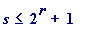
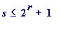
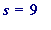
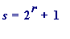
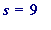
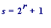
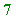
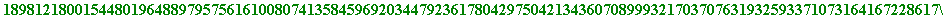
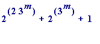

> # ex_short.mws
This is a shortened form of my extend.mws, the last saved form of which is dated at 11/04/99, which I will make available to anyone who wishes to see it.
The Maple work shown below led me eventually to write a paper - Could there exist a sixth Fermat prime? I believe it is not impossible - which I finished on 19th March 1999. I submitted it to, and it was rejected by, the American Mathematical Monthly (my favourite journal).
Extending the range for 's' in Proth
I began this Maple worksheet on Saturday 20th. Feb. 1999, and added to it from time to time up to 11th April, 1999.
I had just formulated a more satisfying statement of Proth's theorem to present to my 3rd. year students, which replaced the '
 ' with '

for the numbers
s
*
, and I wanted to find some examples to show that the improved range for
s
really
threw up some
extra
primes. By hand I took
' with '

for the numbers
s
*
, and I wanted to find some examples to show that the improved range for
s
really
threw up some
extra
primes. By hand I took
 , giving

, and the prime 73. But then I wanted to examine the general
extreme case
where

, giving the numbers:
, giving

, and the prime 73. But then I wanted to examine the general
extreme case
where

, giving the numbers:
![[Maple Math]](images/ex_short7.gif)
and so I did this:
> f := k -> 2^(2*k) + 2^k + 1;
> f(1);

> f(3);
> seq(f(2*t-1), t=1..5);
Of course my real interest was in applying the Proth test to these, and other numbers, but I used the isprime command just to get a fast peek, as it were:
> seq(isprime(f(2*t-1)), t=1..10);
> seq(isprime(f(2*t-1)), t=11..20);
> seq(isprime(f(2*t-1)), t=21..40);
I was - of course - disappointed not to be getting any more primes after those three early true s, but I ploughed on:
> seq(isprime(f(2*t-1)), t=41..60);

> seq(isprime(f(2*t-1)), t=61..100);

> seq(isprime(f(2*t-1)), t=101..150);

> seq(isprime(f(2*t-1)), t=151..200);


> seq(isprime(f(2*t-1)), t=201..250);


At that point I wondered if some trivial sort of factorisation was perhaps taking place, and so I had a go at using the ifactor( , easy) command to see:
> ifactor(f(499), easy);
> ifactor(f(299), easy);
> ifactor(f(199), easy);
> ifactor(f(99), easy);
Those _ c 's made me feel that it wasn't trivial, and so I ploughed on a bit more:
> seq(isprime(f(2*t-1)), t=251..350);


Because of the time those were now taking I decided just to do a Lucas-Fermat base 2 test to see:
>
for k from 351 to 400 do
if 2&^(f(2*k-1)-1) mod f(2*k-1) = 1
then print(k)
fi
od;
When I first saw that 365 it didn't make any great impression on me (though I was glad that I had another candidate - actually I presumed it would give me a prime ... ), but it was only when I did this (that I knew something was going on ):
> 2*365-1;
A power of 3! That's what's behind the earlier ones? The 1, 2 and 5!! Double those less 1 gives 1, 3 and 9. Is f(729) prime? [NO! ... :]
> m := f(729):
> 2&^(m-1) mod m; # just double checking:

Applying the Proth test:
> mods(2&^((m-1)/2), m);

Doesn't give a '
 ', so can't be
proved
prime through Proth ... . Apply Lucas-Fermat test to base 3:
', so can't be
proved
prime through Proth ... . Apply Lucas-Fermat test to base 3:
> mods(3&^(m-1), m);
So m is COMPOSITE!
>
for k from 401 to 450 do
if 2&^(f(2*k-1)-1) mod f(2*k-1) = 1
then print(k)
fi
od;
> # NO OUTPUT
Then I returned to the missing pwers of 3 (the 27, 81 and 243) to see what had happened to those (they had only been declared not prime by the isprime command, but why ... ):
> n27 := f(27);
> 2&^(n27 - 1) mod n27;

Ah! It's a pseudoprime! And:
> 2&^((n27 - 1)/2) mod n27;

But n27 fails a Lucas-Fermat base 3 test:
> 3&^(n27 - 1) mod n27;
Now to test n81:
> n81 := f(81);
> 2&^(n81 - 1) mod n81;

> 2&^((n81 - 1)/2) mod n81;

> 3&^(n81 - 1) mod n81;
And then n243:
> n243 := f(243);
> 2&^(n243 - 1) mod n243;

> 2&^((n243 - 1)/2) mod n243;

> 3&^(n243 - 1) mod n243;

And going on to the next power of 3 after 729:
> 3^7;
> n2187 := f(2187):
> length(n2187);
> 2&^(n2187 - 1) mod n2187;

> 2&^((n2187 - 1)/2) mod n2187;

> 3&^(n2187 - 1) mod n2187;


n2187 is a pp to base 2 ! There MUST be something going on here :
Question : Is  a prime or a pseudoprime to the base 2 ?
That was where I was up to by Saturday evening
. One thought that came to me was that the
 was
simply
the quadratic case of the more general irreducible cyclotomic one coming from a
prime
p
, and all of a sudden a
much grander scheme
presented itself:
was
simply
the quadratic case of the more general irreducible cyclotomic one coming from a
prime
p
, and all of a sudden a
much grander scheme
presented itself:
The
Fermat numbers
are the values of the
1st. degree
polynomial
 under the substitution
under the substitution
![[Maple Math]](images/ex_short74.gif)
The ones I stumbled upon from the simple extension I made of Proth's theorem: using the
2nd. degree
polynomial
, followed by the
substitution
[actually this quadratic made me wonder
about cyclotomic ones [and the '3' made me feel that
it
was the
p
], which is why I went backwards to the
1st. degree one, and the Fermat
jumped out at me
... making me feel that
something is going on
... ]
It made me speculate that I should look at the
irreducible cyclotomics
:
+ ... +
, where
p
is prime, and under the substitution
[and
perhaps vary the '2' as well? Is the '2' that is causing the pseudoprimes to base '2' to emerge?]
At this point I cut my original Maple worksheet short, and refer to my Could the exist a sixth Fermat paper... for mathematical details.